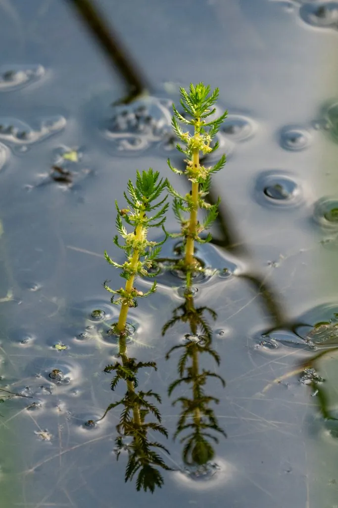

水生植物 · 植物界
狐尾藻 Myriophyllum verticillatum

小二仙草科多年生沉水草本，叶片羽状细裂、轮生如狐尾，是水族箱和湿地中常见的沉水植物，可净化水质。
- 分类
- 门被子植物门纲木兰纲目虎耳草目科小二仙草科属狐尾藻属
- 栖息环境
- 池塘、湖泊、河沟等静水或缓流水体，喜光、耐污染
- 地理分布
- 广布北半球温带水域，中国各地淡水水域常见
- 保护级别
- 暂无评估
物种志
狐尾藻为小二仙草科狐尾藻属多年生沉水草本，茎细长，长 0.5–2 米，多分枝。叶片轮生，每轮 4–6 枚，羽状深裂成细丝状，形似狐尾。花小，单性，生于挺出水面的花穗上，花期 6–8 月；果实为小坚果。
狐尾藻广布于北半球温带水域，中国各地池塘、湖泊和河沟常见，喜温暖、阳光充足和富含养分的水体，靠断枝和越冬芽繁殖，生长很快。它叶片细裂、轮生排列，形似狐狸尾巴，是水族箱中常见的后景水草，可为鱼虾提供隐蔽场所；同时能吸收水中氮磷、抑制藻类，常用于人工湿地和水体生态修复。狐尾藻大量繁殖时也会堵塞渠道，需要定期打捞清理，以免影响航运和水质。
形态与习性
- 株高茎长 0.5–2 米，多分枝
- 花期6–8 月，花小，生于挺水花穗
- 果期花后结小坚果
- 光照喜充足阳光
- 水分沉水生长，适宜水深 30–150 厘米
- 土壤塘泥底质，也能漂浮生长
- 繁殖断枝扦插与越冬芽繁殖
- 主要用途水族箱水草、净化水质、饲料
趣味知识
- 狐尾藻的叶片羽状细裂、轮生排列，形似狐狸尾巴，因此得名。
- 它能把花穗挺出水面开花，水下部分则仍保持沉水生长。
- 狐尾藻靠断枝和越冬芽繁殖，生长速度快，需定期打捞。
- 它吸收水中氮磷能力强，常用于人工湿地和水体修复。